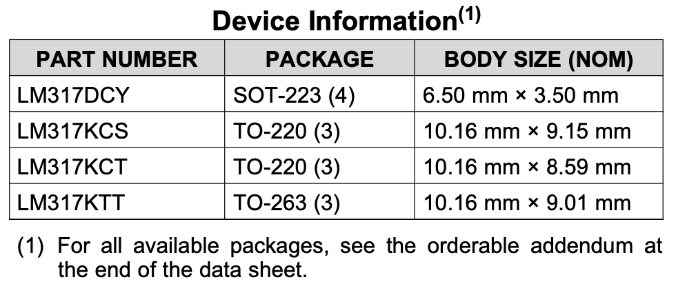
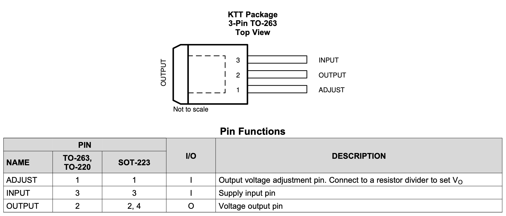
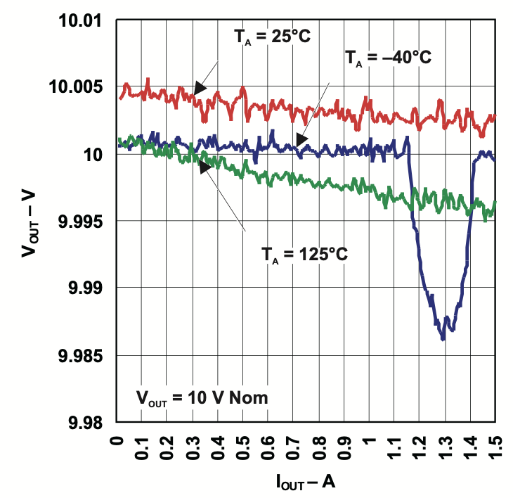
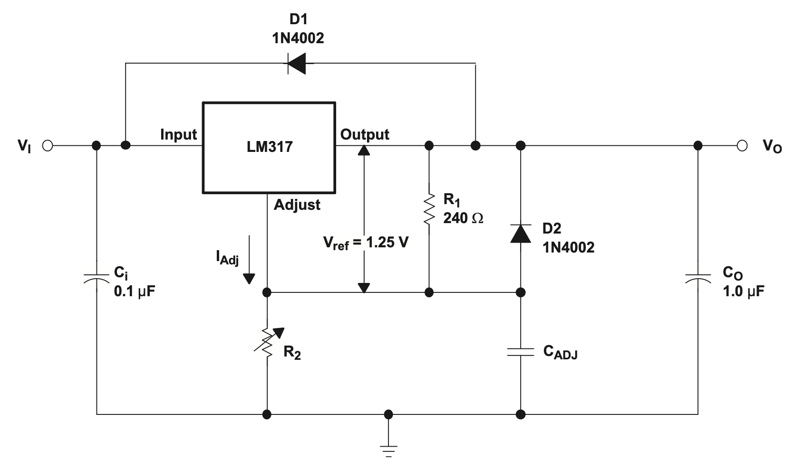
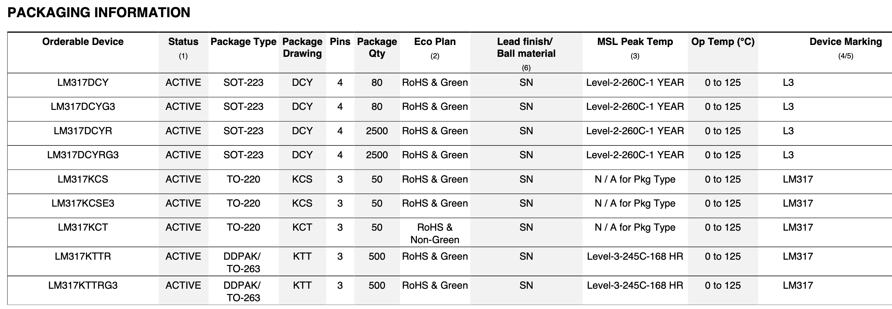

Data Sheets
Math Ahead
There's some math ahead. It's not math for data sheets, but specifically math for regulators. You should be able to follow along as I've tried to be as explicit as possible along the way.
What is a Data Sheet
A data sheet is a document that the manufacturer of an electronic component, whether it be a simple passive (e.g., resistor, capacitor, inductor), or something active like a semiconductor, puts all the details of the behavior of the component and how to use it properly. Obviously the data sheet for a complicated micro-controller will be much larger than the one for a capacitor, but they are, typically, organized in similar ways.
Parts and Jellybeans
For the purpose of this, we're going to go through a semi-complicated device, specifically a LM317 linear voltage regulator from Texas Instruments.
One thing to note about a part like this is that it is often called a "jellybean part". A jellybean part is a part that is common, standardized, and effectively universally interchangeable from manufacturer to manufacturer. In fact, if we check Digikey, they have 66 different LM317 products from 4 different manufacturers. For most applications, any one of these would be just fine. I have chosen the TI product because, to me, they're one of the "reference manufacturers". This means they are consistent, well know, and typically the originator of many parts.
Where to Find Them
The two best places to find a data sheet are either from the manufacturer themselves (every manufacturer has a decent web presence at this point), or from the distributor. The link above is from TI's website directly. In addition, every major supplier will typically have links to the data sheet for the parts they carry. For example, if you go to the Digikey page for the LM317LCLPR (more on those weird letters later), they have a link to the data sheet for that exact part.
Lastly, you can always just search "LM317 data sheet" on your favorite search engine, and you'll typically get the right thing. This can be especially helpful when you're buying random parts from eBay, AliExpress, or other less official distributors. Octopart also is a good way to find them, as they'll typically have a link.
How to Read Them
If you download the LM317 (PDF) data sheet, you can follow along. We will start with the top-level sections and go into them each in turn. Along the way, we'll discuss some aspects of linear regulators to be aware of in this context.
Header
{kind=link}
In the header, the manufacturer provides information like the official part number and name, as well as (typically) the first release date and the latest revision date of the data sheet. In this one, we can see it was first released in September of 1997 and updated in April of 2020. It's actually not that unusual to find data sheets where the part was released 30+ years ago.
Features
The features provide a device-specific overview of the things most people will care about when selecting the device. Does it have any unique characteristics?
- Output voltage range adjustable from 1.25 V to 37 V
- Output current greater than 1.5 A
- Internal short-circuit current limiting
- Thermal overload protection
- Output safe-area compensation
From this data sheet, we can see that it has an adjustable output range from 1.25 to 37V, and can deliver at least 1.5A, and it has multiple internal safety mechanisms.
Applications
Recommendation applications, but not necessarily all of the applications. In many ways, this is just marketing; but, if it talks about "military" or "aerospace", you at least know you've got your hands on a very expensive part, and you might want to look elsewhere. This can read like a laundry list with some vendors, but it can also be a neat set of ideas that you might not have thought of.
Description
A prosaic overview of what the device is. For this device, we get:
The LM317 device is an adjustable three-terminal positive-voltage regulator capable of supplying more than 1.5 A over an output-voltage range of 1.25 V to 37 V. It requires only two external resistors to set the output voltage. The device features a typical line regulation of 0.01% and typical load regulation of 0.1%. It includes current limiting, thermal overload protection, and safe operating area protection. Overload protection remains functional even if the ADJUST terminal is disconnected.
There's a few things here that aren't in the Features section. For example, we now know we'll need two resistors to set the output voltage, and that it has line and load regulation tolerance of 0.1%. Line regulation is the ability of the device to maintain a constant output voltage even with a varying input voltage. For example, the device should deliver 3.3V whether it's being driven with 4V or 12V. Load regulation is closely related, but it is the ability to maintain a constant voltage when the load (think amps) is varying.
There's also a little detail about how the protection works. The three types of protection this device includes are:
- Current limiting. This means the device will limit the amount of current that it delivers to ensure safety under all circumstances. For example, if you were to short the device, it will ensure it behaves properly.
- Thermal overload protection. The device will have protections to ensure that if it gets too hot, it will shut itself off to keep from having permanent damage. This is typically anything far outside the recommended operating temperature.
- Safe operating area. Safe operating area (SOA) is something unique to power devices (think transistors of many types). It is the current and voltage conditions where it can be expected to operate without damage.
A quick read of this section is going to tell you whether this part is likely to work for your application or not.
Part Number & Device Information

A listing of all the variations of the part that the company produces. These may differ in specification, packaging, or both. It may not be exhaustive, but is typically the "main" versions. Some data sheets will have this on the front page or two, and others will have it near the end. Earlier, I said we'd come to the weird string of letters at the end of the "LM317". This is where you might find the details.
From this, we can see that the part comes in 3 different packages: TO-220 (3 pins), TO-263 (3 pins), SOT-223 (4 pins). In this case, the TO stands for "Transistor Outline", and the TO-220 package is a through-hole (THT) package, while the TO-263 is surface mount (SMD). The SOT-223 is just a "Small Outline Transistor" package, which is another (even smaller) SMD package.
You can see the various sizes in this chart as well.
Revision History
A list of all the changes to the data sheet. Typically, these are just clarifications, although occasionally some vendors will sneak in an important change to the characteristics or behavior of the component in a revision to the data sheet. This is evil.
Device (Comparison) Table
{kind=link}
Here we can find information on all the variations on the part from a specification perspective, along with the critical characteristics for those variations. A few notes about this one.
First, you can see it's grouped into 3 groups along the Iout dimensions. This is the maximum current that the device can produce safely. For example, the LM317M is only designed for 0.5A.
Tolerance
I'm going to talk about tolerance here, and, in the future, will discuss it in more detail because it's something that often trips up engineers. One thing, especially, to be aware of is tolerance stacking. Although this discusses it in a different context, the idea is similar.
If we take the 1.5A primary parts, we can see a few things that differ. First, regulation accuracy differs. Earlier, I mentioned line and load regulation tolerance of 0.1%, so why does this say 1-1.5%? Well, the tolerance is about how the regulated output behaves under different input voltages and output loads. The regulation accuracy is how close to whatever you've set it to (let's say 3.3V) it actually hits. For 1.5%, this means 3.3V ±0.0495, or a value between 3.2505 and 3.3495. Good enough for nearly every use case.
We can also see that some devices have a wider operating temperature range than others, and you can just assume those will cost you (sometimes substantially) more. Another dimension discussed here is PSRR (at 120Hz). This is the power supply rejection ratio, and is nearly always specified in decibels. Simplified, this is the ability of the device to reduce input supply noise in its output. Noise can be thought of as just the variations in the input supply. For example, in poorly isolated circuits, you can get mains frequency showing up in the DC side of the circuit.
Finally, there are several lines (per package) that mention \(T_{JA}\), which is often written as \(\theta_{JA}\). Either way, this is the thermal resistance between the junction of the transistor and ambient temperature. Where does this come in? Mostly if you want to calculate the allowed power dissipation (\(P_{D(max)}\)), where you use this equation:
Where \(T_{J(max)}\) is the maximum junction temperature, $T_A% is the ambient temperature the device is operating in, and we take \(\theta_{JA}\) from before.
But honestly, you don't need to worry about this most of the time. Just stay within the operating temperature of the device, and you'll be fine (enough).
Pin Configurations and Functions

For every packaging option, there should be a diagram showing the package, and the pin assignment. These often change package to package, so pay attention. Below this, we can find a table showing 1) whether this is an input or output pin, and 2) a description of it. So we can see the supply (input) is on pin 3, the output is on pin 2, and pin 1 has the resistor divider network to set the output voltage.
Specifications

In this section we can find, typically, very detailed technical information about the component. For example, the \(T_{J(max)}\) mentioned earlier, various ESD ratings, and lots of thermal information. The one thing to take from this section for the LM317 is the \(V_I - V_O\) delta, which must be between 3 and 40V. This means, to get a 3.3V output, you need to feed it at least 6.3V in.
Finally, you'll also find in-depth electrical characteristics about the component. More about the line and load regulation discussed earlier, as well as various power quality specifications. When dealing with the better manufacturers, these will typically include graphs of important characteristics, such as the load regulation shown here. This shows the output voltage (10V nominal) at certain output current loads at -40, 25, and 125C.
Detailed Description
Here we find a lot of useful information. We also find out a few details:
- Connecting a fixed (single) resistor between the output and adjust terminals, we can convert the regulator into a current regulator.
- An output capacitor (between output and ground) is recommended to improve transient response. Basically, the (bypass) capacitor acts as a tiny battery for sudden surges in output.
- The adjust terminal can be bypassed (capacitor) to achieve very high ripple-rejection ratios. Ripple rejection is the ability of an amplifier to maintain accurate output voltage despite AC fluctuations in the power supply.
{kind=link}
We also get a functional block diagram. This isn't how the device is actually built, but is often the idealized version of it. What it will show you, though is what the main pieces inside the component are. Here we can see that it consists of a current source, an operational amplifier (opamp), a Darlington (NPN) transistor, a resistor, and a Zener diode. Examining this will give us a good understanding of how to use the component properly, but also how all the pieces fit together.
We also discover a few different operating modes of the device, specifically how it behaves in normal, low voltage, and low (current) load.
Applications and Implementation
Here's where we find the real meat of how to work with the component. The first is the typical application. You should think of this as the manufacturers strongly worded recommendation on how to use the component. Ingenium cave.

In this situation, we have both a schematic and a series of recommendations:
- R1 and R2 are required to set the output voltage.
- \(C_{ADJ}\) is recommended to improve ripple rejection. It prevents amplification of the ripple as the output voltage is adjusted higher.
- \(C_i\) is recommended, particularly if the regulator is not in close proximity to the power-supply filter capacitors. A 0.1-μF or 1-μF ceramic or tantalum capacitor provides sufficient bypassing for most applications, especially when adjustment and output capacitors are used.
- \(C_O\) improves transient response, but is not needed for stability.
- Protection diode D2 is recommended if \(C_{ADJ}\) is used. The diode provides a low-impedance discharge path to prevent the capacitor from discharging into the output of the regulator.
- Protection diode D1 is recommended if \(C_O\) is used. The diode provides a low-impedance discharge path to prevent the capacitor from discharging into the output of the regulator.
From this, we can surmise that to implement a LM317-based regulator circuit the way TI recommends, we will need 2 resistors (to set the voltage output), a couple of capacitors, and a couple of 1N4002 diodes for protection.
Manufacturer versus Hobbyist; Prototype v Production
It's important to remember that the manufacturer is trying to show the best possible way to use their component. This doesn't mean it's the only way to use it, but you would be well served to follow the advice if you don't understand why you might not. For example, if we were just puttering on a prototype board, we might leave the capacitors out, which would allow us to also leave out the diodes. But we shouldn't do that if we end up turning it into a PCB.
We are then given the equation to set the output voltage using the two resistors:
There's also a little note that \(I_{adj}\) is typically only 50uA, and therefore almost irrelevant since (assuming R2 is 220 ohm): \(0.00005 \times 220 = 0.011\), and the \(V_{ref} = 1.25V\), so we can simplify the equation to:
Let's re-arrange so we can solve for just one of the resistors:
Now, let's assume we want 5V as an output:
Now, if we just stick in 100 ohms for \(R_1\), we get \(R_2 = 300\). So we need R2 to be 300 ohms when R1 is 100 ohms. If we go back to the original equation, and we assume \(I_{adj} = 50\mu A\), then we get:
So, we are over by \(5.005/5.000 = 0.1%\). It should also be noted that you typically want the lowest value resistors that can work here, even though you could use 1k and 3k to achieve the same thing.
Showing Your Work
I just want to acknowledge Ms. Clayton, my highschool calculus teacher who repeatedly reprimanded me for not "showing my work" when I did assignments. Here's my work; you were right.
The rest of this section has a bunch of example circuits for various applications. You often will find something that is either exactly, or very close, to what you're looking for. Use it if you can.
Recommendations
The LM317 is designed to operate from an input voltage supply range between 1.25 V to 37 V greater than the output voltage. If the device is more than six inches from the input filter capacitors, an input bypass capacitor, 0.1 μF or greater, of any type is needed for stability.
A couple takeaways:
- We need 1.25-37V more input voltage than output voltage. There are other devices (called LDO, or low drop-out regulators) which need much less.
- If we're more than 6" from the input filter capacitor, we should use a 0.1uF bypass on the input.
Simple enough.
Layout
First, TI provides some specific recommendations:
- TI recommends that the input terminal be bypassed to ground with a bypass capacitor.
- The optimum placement is closest to the input terminal of the device and the system GND. Take care to minimize the loop area formed by the bypass-capacitor connection, the input terminal, and the system GND.
- For operation at full rated load, TI recommends to use wide trace lengths to eliminate I × R drop and heat dissipation.
They then provide an example "layout" for best performance:
{kind=link}
The large grey blocks are intended to be "wide traces" (see how to calculate), and they show in this specific package (SOT-223) you should connect the two output pins together with a substantial trace. They also show using a pair of input capacitors (one for high input, and another to block high frequency noise). Dave (of EEVblog) did a great video showing the effects of various combinations.
Device and Documentation Support
This section will contain information on how to stay up-to-date from the manufacturer and various other miscellaneous information.
Mechanical, Packaging, and Orderable Information
Finally, we get a list of all the various orderable products:
'
There's a few things here to pay attention to. The first, and maybe even the most important is "Status". This is the part's status to the manufacturer, and for TI they use the following terms:
- ACTIVE. Product device recommended for new designs.
- LIFEBUY. TI has announced that the device will be discontinued, and a lifetime-buy period is in effect.
- NRND. Not recommended for new designs. Device is in production to support existing customers, but TI does not recommend using this part in a new design.
- PREVIEW. Device has been announced but is not in production. Samples may or may not be available.
- OBSOLETE. TI has discontinued the production of the device.
{kind=link}
You should, if at all possible, avoid any device which is not shown as ACTIVE. You're setting yourself up for a lot of future pain and suffering if you don't. In addition, when searching on a distributor's website, you should make sure you select "Active" for all searches, unless you have some very specific and intentional reason not to. The image to the left shows what it looks like in Digikey's parametric search
Other Sections
Future Enhancement
I will be diving into some sections in other types of components at a later time, but I've included a couple that are common in more advanced integrated circuits (IC).
What I've walked through is just what you'll find on something like a linear regulator. Depending on the type of component you're dealing with, you are likely to find some other sections:
- Timing diagrams. These are super common in digital ICs. They show how data should be sent to and received from the part, and at what speed. These are typically laid out inputs and outputs as horizontal lines. These show the logic transitions that happen over time. If the trace dips down, that's a (L)ow input or output. If the line rises higher, that's a (H)igh input our output. Timing specifications are laid out as arrows between transitions (names are referenced back to timing numbers in the electrical specs), and vertical bars or arrows will link related transitions. You can find a deeper dive here.
- Trust tables. Truth tables show how the inputs to a part will affect its output. Each line shows the part's inputs set to specific states, and the resulting output of the part. "H" means that input is a logic high (usually VCC), "L" means logic low (usually GND), "X" means the chip doesn't care what the input is, and an arrow means that that you should change the state of that pin from L to H or H to L depending on the arrow direction. When you do this transition, it's called clocking an input.
In Summary
Whew, that's a lot of information. Part of learning electronics, though, is learning how to quickly skim a data sheet so that you can find what you need to know. Most of it isn't applicable at any one point in time, or is simply additional color to the use case. Still, you should read a few from front-to-back just to familiarize yourself.
If you find a data sheet that feels super light, and it's for one of those common parts, definitely go looking for another manufacturer's sheet. While there are important differences, it's likely to be "close enough" for most use cases.
What to do if You Can't Find One
Todo
Need to write up more details on what to do in this situation. Unfortunately, this is somewhat common with a lot of "inexpensive" parts.
Comments or Questions?
If you have any comments, questions, or topics you'd like to see covered, please feel free to either reach out to me on Mastodon (link below) or open an issue on Github.